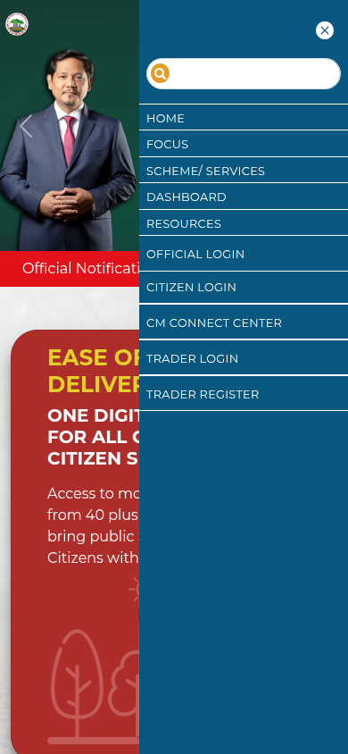
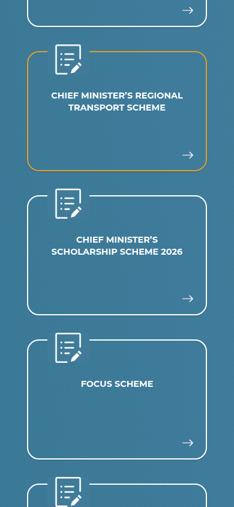
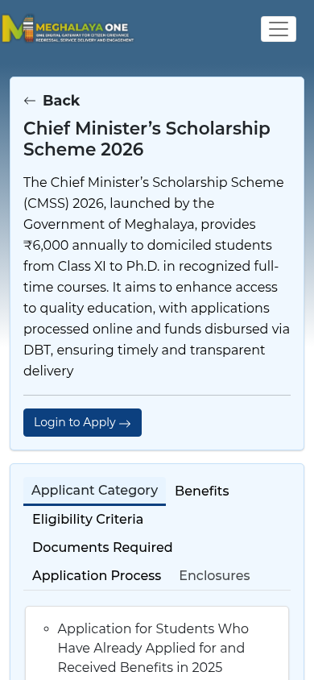

Meghalaya CM Scholarship 2026-27: Class XI to Ph.D., apply by 6 November
The Government of Meghalaya has invited fresh and renewal applications for the Chief Minister Scholarship Scheme (CMSS) for 2026-27. It is for permanent residents of Meghalaya studying regular, full-time courses from Class XI to Ph.D. in recognised institutions, inside or outside the state. The notice proposes student registration from 7 October to 6 November 2026; the portal has a reachable CMSS application entry as of 12 October, but this does not prove it opened on 7 October or that a full application can be completed.
Proposed dates in the notice
- 7 October 2026: application portal opens (fresh and renewal)
- 6 November 2026: portal closes for student registration
- 4 December 2026: last date for state verification and for students to fix defective applications
Documents to upload
Fresh application (first time)
- Latest or previous year's marksheet
- Bonafide certificate
- Recent passport-size photograph
- Bank passbook or cancelled cheque, when giving bank details
- Identity proof of the applicant or guardian: MHIS card, MGNREGA job card, EPIC/voter ID or ration card
Renewal in the same institute
- Latest (previous year) marksheet
- Bonafide certificate from the current institute
- Recent photograph
- Bank passbook or cancelled cheque, only to change the earlier bank details
Renewal in a new institute
- Latest (previous year) marksheet
- Bonafide certificate from the new institute
- Recent photograph
- Bank passbook or cancelled cheque, only to change the earlier bank details
How to apply: step by step
Checked on the live Meghalaya One portal on 19 October 2026. The portal is open from 7 October; students must finish by 6 November 2026.
- Open the official Meghalaya One portal: meghalayaone.gov.in/meghalaya-one. Use only this link (from the official notice) - never an unofficial agent.
- Open the menu and choose SCHEME/ SERVICES (or use the search box), then open Chief Minister's Scholarship Scheme 2026.
- On the scheme page, read the tabs: Applicant Category (one route if you applied and received the benefit in 2025, another if you did not), Eligibility Criteria and Documents Required.
- Tap Login to Apply. It asks for your date of birth, then your MeghalayaONE login. New users first register for a MeghalayaONE ID (you can also register through Village Data Volunteers, as the portal's "How to get Benefited?" panel explains).
- Fill the application and upload all supporting documents (see the Documents section in this article), then submit before 6 November 2026. If your application is marked defective, fix it by 4 December 2026.
- The scholarship is paid by Direct Benefit Transfer (DBT) to your bank account, so check your bank details carefully. Queries: scholarshipregn@gmail.com or dial 1971 (Meghalaya One support).



Steps 4-6 happen inside your own login, so they are not shown as screenshots.
Video guides
We searched YouTube on 19 October 2026 for a step-by-step application video for the Chief Minister's Scholarship Scheme 2026 on the Meghalaya One portal in English and in Malayalam. We could not verify one that matches this scheme and the current portal, so we are not linking any rather than risk outdated or unrelated instructions.
What the live portal shows
Meghalaya One was checked live on 12 October 2026. Under SCHEME/SERVICES it lists "Chief Minister's Scholarship Scheme 2026". The detail page has a working "Login to Apply" entry that opens a date-of-birth prompt. We stopped there: no form values, login, account creation or application submission.
The portal description states Rs 6,000 annually, with funds paid through Direct Benefit Transfer (DBT). This figure comes from the live portal, not the 5 October notice, which does not state an amount. The listing says "2026", not explicitly "2026-27". Applicant categories cover students who applied and received benefits in 2025, and students who did not apply in 2025, matching renewal and new-applicant routes.
A reachable entry today does not verify a 7 October opening date, acceptance beyond the DOB/login step or successful completion. Follow the notice's proposed dates and check the current scheme terms before applying.
For background, The Shillong Times reported on 26 August 2025 that the CMSS 2025 scheme paid Rs 6,000 annually directly into bank accounts, with no income ceiling. That is a report about the 2025 scheme, not confirmation of every 2026-27 eligibility rule.
Frequently asked questions
Who can apply?
Permanent residents of Meghalaya, in regular full-time courses from Class XI to Ph.D., per the notice.
How much is the scholarship?
The official notice does not state an amount. The live Meghalaya One CMSS 2026 description, checked 12 October 2026, states Rs 6,000 annually paid via DBT. The portal listing is labelled 2026 rather than explicitly 2026-27.
What changed since this post?
Official announcement and both pages of the scanned notice checked 12 October 2026. Notice reference CE/SCHOL/CM-SS/3/2025-26/51 is dated 5 October 2026. Although its reference and PDF filename contain 2025-26, the body explicitly invites applications for Academic Year 2026-27. Dates remain proposed. After publication, Meghalaya One was checked live on 12 October: the CMSS 2026 listing, Rs 6,000 annual DBT description, applicant categories and Login to Apply DOB prompt were verified. No login or submission was tested, and the opening history was not verified. The notice itself states no award amount, income threshold or merit rule.
Sources: Meghalaya Government announcement, official notice (PDF), Meghalaya One portal (SCHEME/SERVICES, CMSS 2026), The Shillong Times, 26 August 2025 (background on the 2025 scheme). Checked 12 October 2026; apply steps and video search re-checked 19 October 2026. This is an AiCoN explainer, not a government publication.